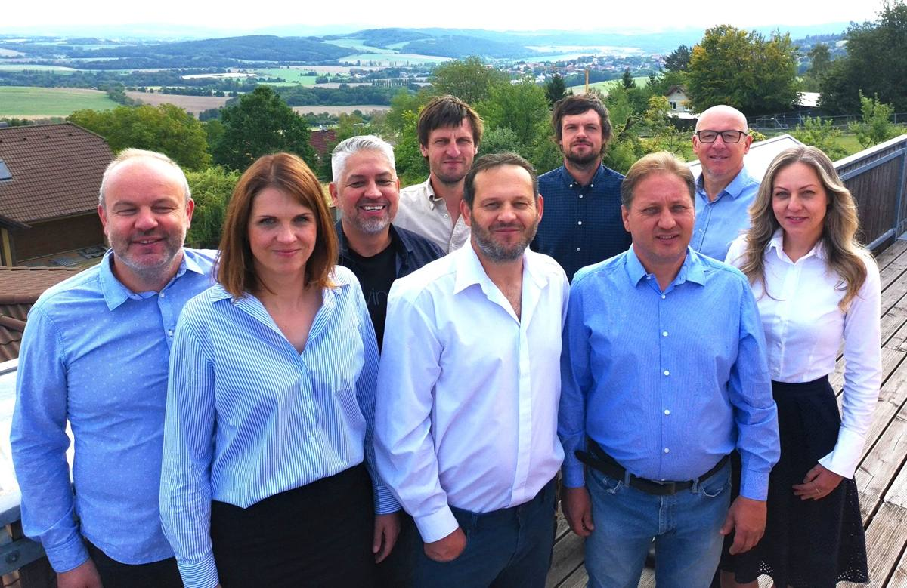
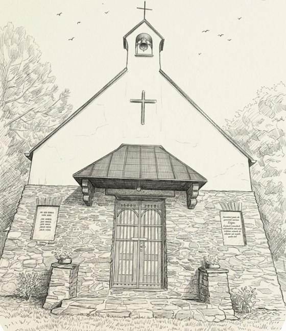
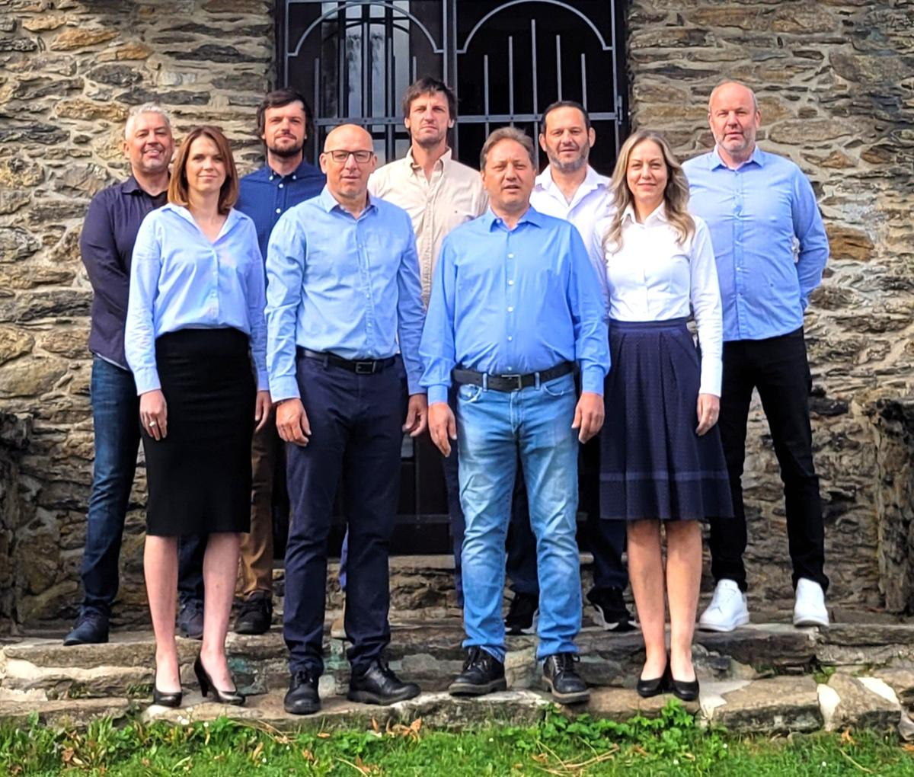

01
Pitná voda
Zajistit revizi čistoty pitné vody a její pravidelnou údržbu. Vyhodnotit platnou smlouvu s firmou CHVAK a.s. Domažlice, která by měla zajišťovat pravidelnou údržbu vodovodního řadu naší obce.

Jsme Sdružení nezávislých kandidátů „PRO DÍLY“. Přijďte k volbám, zvolte si své zástupce do vedení obce a podpořte nás svým hlasem. Jde nám o Díly a společné soužití.
dne 9. a 10. října 2026 nás čekají volby do zastupitelstva naší obce, a proto si vás dovolujeme oslovit.
Abychom mohli po volbách nahlas promluvit do nového obsazení vedení obce, přijďte k volbám a podpořte nás svým hlasem.
Vyjádřete svůj názor, kam by se měla naše obec v budoucnu ubírat a na jaká témata se zaměřit. V předvolebním období letošního roku jsme společně vytvořili stávajícímu vedení obce zdravou konkurenci, což je pro dnešní dobu velice důležité.
Slovo jedné strany ve vedení obce, které v Dílech máme již několik volebních období, určitě nepřináší posun v názorech, jednáních a především v rozvoji naší obce.
Proto kandidujeme jako sdružení nezávislých kandidátů – bez politické příslušnosti, s jediným zájmem: aby se v Dílech dobře žilo všem.
Přijďte všichni k volbám a zvolte si své zástupce do vedení obce. Zkusme to společně trochu jinak.
Multifunkční hřiště s umělým povrchem v prostoru bývalých tenisových kurtů.
Podpora kulturních, sportovních a společenských akcí v obci.
Transparentní podpora všech činných složek a rovné podmínky pro jejich rozvoj.
Bezpečná, čistá a celoročně udržovaná obec pro všechny generace.
Průzkum mezi občany, kniha přání a stížností a otevřená komunikace s vámi všemi.
Naše sdružení se s podporou vás, občanů, chce v počátku zabývat těmito tématy.
Zajistit revizi čistoty pitné vody a její pravidelnou údržbu. Vyhodnotit platnou smlouvu s firmou CHVAK a.s. Domažlice, která by měla zajišťovat pravidelnou údržbu vodovodního řadu naší obce.
Transparentně podporovat finančně i materiálně všechny současné činné složky, vytvořit jim rovné podmínky pro jejich další rozvoj a reprezentaci naší obce.
Zajistit opravu fasády místní kapličky Cyrila a Metoděje – symbolu Dílů v centru obce, která v roce 2027 oslaví úctyhodných 80 let.
Zachovat fungování místního obchodu a hostince (klubu Tyrolka), podporovat a podílet se na pořádání kulturních, sportovních a společenských akcí.
Provést vnitřní audity dotačních akcí, které jsou schválené nebo se plánují.
Efektivně a transparentně vyhodnocovat využívání a náklady na obecní techniku.
Zajistit do budoucna bezpečnost v naší obci – na základě ankety zvážit instalaci kamer na klíčová místa (příjezdové cesty, centrum, kontejnery).
Přemístit velkoobjemové kontejnery na odpad z hřiště mimo centrum obce, starat se o zeleň i mimo centrum a v zimě zajistit a garantovat provozuschopnost a údržbu všech ulic v obci.
Zaměřit se na dotační program pro vybudování umělého bezúdržbového multifunkčního hřiště v prostoru bývalých tenisových kurtů.
Provést průzkum mezi občany ke zkvalitnění služeb, zavést knihu přání a stížností a naslouchat vám všem.
Všechny občany Dílů chceme ujistit, že na rozdíl od toho, co se po obci chybně říká, v žádném případě nechceme uzavírat současný hostinec Tyrolka ani místní obchod potravin. Naopak – chceme se zasadit o to, aby všechny tyto služby v naší obci fungovaly pro občany Dílů i širokou veřejnost na potřebné úrovni dnešní doby, ale zároveň transparentně a účelně.

Kaplička v centru obce je symbolem Dílů. V roce 2027 oslaví úctyhodných 80 let – a zaslouží si, aby k tomuto výročí vypadala důstojně.
Chceme proto zajistit opravu její fasády, aby i nadále zdobila centrum obce a připomínala, že Díly jsou náš společný domov.
Co se nám – jednotlivcům i novému sdružení „PRO DÍLY“ – za krátké období podařilo.
Na posledních jednáních veřejného zastupitelstva se nám s podporou vás – občanů – podařilo upozornit vedení obce na přetrvávající stížnosti na kvalitu vody a neuspokojivý přístup ze strany vedení obce a firmy CHVAK a.s. Domažlice.
Vytvoření zdravé konkurence a naše aktivita vzbudily veřejný zájem o dění v obci. Účast na veřejném zasedání zastupitelstva stoupla z 16 občanů v květnu na 33 v červnu a na více než 50 občanů v září 2026.
Upozornili jsme vedení obce na netransparentně řízený KLUB TYROLKA a jeho hospodaření (od května 2026 má dle sjednané smlouvy o nájmu nového provozovatele).
Naším upozorněním se podařilo odstranit dlouhodobě parkující dodávkové vozidlo „vrak“ z obecního pozemku. Vyzvali jsme také vedení obce k řešení nevhodného umístění velkoobjemových kontejnerů a techniky (valníku) v centru obce – na hřišti.
Vyzvali jsme vedení obce k přehodnocení záměru vybudovat fotbalové mini hřiště v prostoru bývalých tenisových kurtů. Na tomto místě by mělo vzniknout spíše víceúčelové hřiště pro všechny druhy sportů s umělým bezúdržbovým povrchem, jako je to v sousedních obcích.
Po našem dotazu na využívání obecní techniky (zejména traktorů a valníků určených k údržbě obecních pozemků a veřejných prostor) se snížila četnost jejich užívání a upravila se evidence využívání (kniha jízd apod.).

Devět lidí z různých profesí, které spojuje jedno – chceme, aby se v Dílech dobře žilo všem. Nejsme členy žádné politické strany a do vedení obce chceme přinést otevřenost, kontrolu a naslouchání.
Sdružení nezávislých kandidátů „PRO DÍLY“
Vážení spoluobčané obce Díly,
tímto se chceme jednoznačně ohradit proti lživým obviněním a hrubým urážkám, že naše Sdružení nezávislých kandidátů „PRO DÍLY“ č. 1 mělo zorganizovat kontrolu živnostenského úřadu v hostinci TYROLKA. Jak se následně úředně potvrdilo, jednalo se o běžnou, dlouhodobě plánovanou kontrolu nového podniku, kterou úřad provedl ze své úřední povinnosti.
Ještě tentýž den jsme svolali osobní jednání se starostou a ostatními členy Sdružení nezávislých kandidátů č. 2, abychom situaci řešili. Na jednání se dostavil pouze starosta a podle jeho vyjádření jednal za celé své sdružení (č. 2).
Hrubé urážky a nařčení ze strany některých občanů a zástupců Sdružení nezávislých kandidátů (č. 2) jednoznačně odsuzujeme a takové jednání je pro nás zcela nepřijatelné. Ostrá slova a útoky, které se objevily, nás velice mrzí a věříme, že do naší obce nepatří. Stojíme o slušný a věcný dialog o tématech, která vás, občany Dílů, skutečně zajímají.
Přejeme si, aby nadcházející předvolební období bylo pro obě kandidující sdružení rovnocenné, transparentní a férové.
Volby do zastupitelstva obce Díly proběhnou v pátek a v sobotu 9. a 10. října 2026. Stačí jeden křížek u našeho sdružení.
Podpořte nás – jde nám o Díly a společné soužití. Za každý váš hlas pro naše sdružení vám předem všichni děkujeme a těšíme se na budoucí spolupráci.